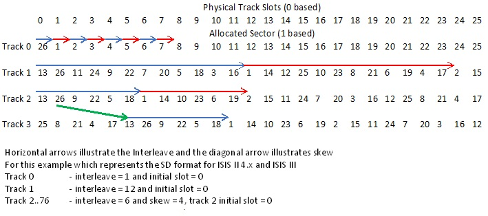

The ported disktools imdu, bin2imd, dmk2imd and td02imd are documented in imd.txt or imd.pdf.
My variant td02img has the same command line arguments as td02imd but produces an image .IMG file.
Note I have added bookmarks to imd.pdf to help navigate to the relevant sections.
There are three primary tools in this category
unidsk extracts files from an IMD or IMG file of an ISIS disk. It also supports some iRMX formatted disks.
mkidsk creates an .IMD or .IMG files for ISIS I / II / III and ISIS PDS disks, using a recipe file.
irepo, underlying unidsk and mkidsk is a repository of Intel files that I maintain. The repository allows for versions of many files to be identified. The irepo tool replaces previous perl scripts and supports updating the repository database, reindexing recipe files and processing a list of files to help identify them using the repository data.
Although unidsk and mkidsk can operate in a limited fashion without the repository, it is recommended that the repository is used. To do this a copy of the repository needs to be accessible as a file directory from the local machine, with the environment variable IFILEREPO pointing to the top of the repository.
For example, using windows assuming the repository is located at
D:\intel
It would contain the directory trees
D:\intel\Intel80\...
D:\intel\Intel86\...
and the repository database
ncatalog.db
In addition IFILEREPO would be set to D:\intel
As noted this tool processes a .IMD or a .IMG file that contains an ISIS disk image.
If the image format corresponds to an ISIS I / II / III or ISIS PDS disk, It extracts the content and creates a recipe file corresponding to the content. The recipe format is documented in recipe.
Otherwise it assumes the disk is an ISIS IV or iRMX disk and if successful , it extracts content and provides an __log__ file that describes the content
usage: unidsk [-v] | [-V] | [-l] [-d] file
-v/-V show version information and exit
-l supresses the repository lookup
-d debug - shows link info
file should end in .IMD or .IMG and a directory is created with the file name minus the .IMD or .IMG
-l avoids the use of the repository, but this prevents file version identification
-d is for ISIS I / II / III and ISIS PDS disk images. It shows the file link structures
For ISIS I / II / III and ISIS PDS disks the tool will additionally attempt to extract any deleted files, prefixing them with a # is they appear to be valid. These appear as comments in recipe file.
If the repository is being used, then each file is looked up in the repository and its location is identified. This allows file versions to be identified. There are some files for which multiple copies are available, if matched, these are also listed.
For ISIS IV and iRMX, the recipe format is not supported. In this case a logfile __log__ which captures information about the files. In addition some of the underlying system files are saved e.g. __fnodes__ which stores the raw directory data.
This is the logical inverse of unidsk in that it takes a recipe file and recreates a .IMD or .IMG disk image.
Whilst many people prefer to keep prebuilt .IMD or .IMG files, in creating the repository I identified many anomalies in the shared disk images. It is apparent that many are copies, sometimes copied between machines. In addition a number have corrupted files. The mkidsk allows pristine versions to be created, even restoring the original interleave and skew if required.
A recent addition to mkidsk is that it will now automatically provide ISIS operating system files based on the os version specified in the recipe. It will also set the file attributes appropriately.
Whilst it is possible to override the os files mkdisk uses, it is not recommended, unless you have a version that is not currently supported; if you have please let me know so that I can add to the collection of supported versions. Be aware I have seen some corrupt versions of the OS.
I currently have over 210 recipe files that can recreate ISIS disks to what I believe is or is close to the original content.
usage: mkidsk -v | -V | [options]* [-]recipe [diskname][.fmt]
where
-v / -V show version infomation and exit. Must be only option
recipe file with instructions to build image. Optional - prefix
if name starts with @ and the OS has problems with this
diskname generated disk image name - defaults to recipe without leading @
fmt disk image format either .img or .imd - defaults to .imd
options are
-h displays this help info
-s add source: info to imd images
-f[nn] override C7 format byte with E5 or hex value specified by nn
-i[xyz] apply interleave. xyz forces the interleave for track 0, 1, 2-76
for ISIS I & ISIS II disks
x,y & z are as per ISIS.LAB i.e. interleave + '0'
-t apply inter track skew
Note although mkidsk doesn't require it, the convention is to name recipes starting with an @ character. Both unidsk and irepo follow this convention.
The recipe format is documented in recipe and my naming convention is documented in naming
By default the output name is the recipe name minus the leading @ and with a .IMD extension. As the recipe file may have a long file name, you may wish to explicitly specify a shorter output filename.
Unless you are targeting a physical disk, the -i and -t options are unlikely to be used. The -i option adds offsets between sectors on a track and the -t option adds offsets between sectors on a track change. This is needed because ISIS physically interleaves the sectors, unlike CP/M which applies a logical interleave. See Interleave and skew for more information.
Although -i allows the default interleave to be overwritten, unlikely to be needed.
The -f option is only needed to replicate a disk copy to a non ISIS machine. By default ISIS fills unused sectors with 0xc7, unlike CP/M and MSDOS which use 0xe5.
Note: IMD does not support the M2FM encoding used by ISIS DD disks. Generated files use the MFM encoding instead.
When creating physical disks, the Intel standard spaces the layout of where sectors are on the disk physically, using interleave as the spacing within a track and skew as an additional spacing between adjacent tracks. The diagram below illustrates this, note interleave is added before sector 1 is allocated for ISIS I / II / III but not for ISIS PDS. Additionally tracks 0, 1 and 2 and all tracks for ISIS I, ISIS II 2.2 and ISIS PDS reset the initial slot to 0.

The interleave is encoded in the ISIS.LAB file for ISIS I/II/III with a character used for each track. This character is the interleave value added to the character '0'. Since tracks 2 onwards have the same interleave, the first three characters can be used as a shorthand for the interleaves for the whole disk, as used in the table below which shows the encodings for each OS version. The format columns show the format code that can be used to force this format.
| OS | SD interleave (encoding) - Skew | format | DD interleave (encoding) - Skew | format |
|---|---|---|---|---|
| ISIS I and ISIS II 2.2 | 1,12,3 (1<3) skew not applicable | SD1, SD2 | Not supported | |
| ISIS II 3.4 | 1,12,6 (1<6) - 0 | SD3 | 1,18,5 (1H5) - 0 (makes 2-76 same) | DD3 |
| ISIS II 4.x and ISIS III | 1,12,6 (1<6) - 4 | SD4 | 1,4,5 (145) - 7 | DD4 |
ISIS PDS uses an interleave of 1 for cylinder 0 side 0 and interleave of 4 for all other tracks. Additionally all tracks reset to use initial slot 0.
If the -i option is specified, mkidsk attempts to determine the default interleave and skew as follows:
If the format is explicitly specified as SD1, SD2, SD3, SD4 or DD3, DD4 or PDS then the interleave and skew as are specified in the table above. An error is however flagged if an attempt is made to write an ISIS I/II/III OS to a PDS disk and vice versa. Also an error is generated in attempts to write ISIS I or ISIS II 2.2 OS to an double density disk. Other inconsistent formats and OS generate a warning.
In other cases, if there is an operating system specified, this is used to determine the format as per the table above. Unless there is a specific reason to force a non-standard ISIS I/II/III format, setting the format to SD and DD with an OS specified will do the right thing.
When there is no operating system the following is done
In most cases the above rules should identify correctly the format and in the worst case will create an ISIS II 4.x format disk that should work across all ISIS I/II/III, subject to the disk density being supported.
This tool replaces older perl scripts. It is used to manage the repository and to maintain recipe files as the repository is changed.
Usage: irepo [options] file*
Where options are:
-h show this help
-v show version information
-V show extended version information
-R rebuild catalog
-D show files with the same hash value in the catalog
-u update recipe @files, default is they are skipped
-a show alternatives in @files even for matched entries
file show repo match for file. Recipe @files are skipped unless -u
OS filename wildcard characters are supported
NOTE: the environment variable IFILEREPO must be set to the location of the repository
where catalog.db and the directory trees intel80 and intel86 are located
The default operation is calculate the key (sha1) for each of the specified files and if a copy lists in the repository it shows where it is. As the repository is structured around application and version numbers this makes it simple to identify files.
The other common operation is with the -u option. This refreshes existing recipe flies beginning with the @ character, updating the key and location as necessary.
A recent update in irepo is that recipe files now allow fields to be omitted and end of line comments to be used in the file specifications. When run with the -u option, irepo will add in the omitted fields. If a line has been updated, the comment field will be still be included, however leading space before it will be replaced by a single space character.
Note whilst the application attempts to make a sensible decision on updating the recipe file, there is one scenario where its default behaviour may not be what is wanted. As an example
In the following recipe line
ASXREF,,jQ9fCn6lqGEYXktQevYfR6257K0:^Intel80/asxref/2.1/asxref~1
If you wish to change the file referenced from
^Intel80/asxref/2.1/asxref~1
to
^Intel80/asxref/2.1/asxref~2
simply changing the recipe line to
ASXREF,,jQ9fCn6lqGEYXktQevYfR6257K0:^Intel80/asxref/2.1/asxref~2
will lead to irepo -u reverting back to asxref~1 as the key has priority
To get around this problem change some or all of the key, this will force irepo to insert the new key
Warning, when irepo is used with a list of file names, it calculates the file hash key for each file, so that it can check whether it is in the repository. If you provide the name of a very large file e.g. several MB this can slow down the scanning significantly. For normal ISIS files you are unlikely to notice any delay.
flux2imd processes Kryoflux files into an imd file. Due to current limitations of IMD, it cannot store some historic disk formats, in this case flux2imd saves a hex dump of the sectors for post analysis.
usage: flux2imd -v|-V | [-b] [-d[n]] [-f format] [-g] [-h[n]] [-p] [-s] zipfile|rawfile]+
options can be in any order before the first file name
-v|-V show version information and exit. Must be only option
-b will write bad (idam or data) sectors to the log file
-d sets debug flags to n (n is in hex) default is 1 which echos log to console
-f forces the specified format, use -f help for more info
-g will write good (idam and data) sectors to the log file
-h displays flux histogram. n is optional number of levels
-p ignores parity bit in sector dump ascii display
-s force writing of physical sector order in the log file
Note ZDS disks and rawfiles force -g as image files are not created
raw filenames should be named in the following format
[prefix] [2 digit cylinder] . [1 digit head] . raw
e.g. GW500203.1.raw where the prefix is GW5002, cylinder is 3 and head is 1
To process a whole disk, include the raw filenames for all cylinders into a single zip file. This is includes those for both heads, if a double sided disk.
Current limits for the types of disk supported are
When processing a file, flux2imd creates a log file that is named after the input file, with .raw or .zip replaced by .log. The log file contains information about the processing and will include additional information as follows, dependent on the options selected
| Option | Additional data in log file |
|---|---|
| -b | shows hex dumps of bad sectors. The format used shows alternative decodes for suspect data |
| -g | Shows hex dumps of valid sectors. Always enabled for raw files and formats IMD does not support |
| -h | For each track a histogram of the data is shown, indicating the spread of clock/data bits |
| -p | When dumping sectors, the parity bit is removed |
| -s | Always writes the physical sector order in the log file. Always done for missing sectors |
Normally flux2imd can determine the disk format, however for poor quality disks, it may be necessary to explicitly declare the disk format. The -f option supports this and as noted -f help shows a summary of the predefined formats and how to create a custom one. The current list is
Format Description
FM5 5 1/4" SD **
FM5-16x128 5 1/4" SD 16 x 128 sectors
FM5-15x128 5 1/4" SD 15 x 128 sectors
FM8-26x128 8" SD 26 x 128 sectors
NSI-SD 5 1/4" SD NSI 10 x 256 hard sectors
SD8H 8" SD hard sectors **
ZDS ZDS 8" SD 32 x 128 sectors
LSI LSI 8" SD 32 x 128 sectors
MFM5 5 1/4" DD **
MFM5-16x256 5 1/4" DD 16 x 256 sectors
MFM5-10x512 5 1/4" DD 10 x 512 sectors **
MFM5-8x512 5 1/4" DD 8 x 512 sectors
WREN 5 1/4" Wren DD 10 x 512 sectors
DD8 8" DD MFM & M2FM **
MFM8-52x128 8" DD 52 x 128 sectors
MFM8-26x256 8" DD 26 x 256 sectors
M2FM8-INTEL 8" Intel M2FM DD 52 x 128 sectors
M2FM8-HP 8" HP DD 30 x 256 sectors
TI 8" TI 26 x 288 sectors
DD5H ** 5 1/4" DD hard sectors
MTECH Mtech 5 1/4" DD 16 x 256 hard sectors
NSI-DD NSI 5 1/4" DD 10 x 512 hard sectors
Note ** formats will auto adapt based on detected sectors / encoding
Current predefined multi formats are
PDS [0/0]FM5,MFM5-16x256
Bespoke multi formats can be created using a comma separated list of formats
a prefix is used to determine when the format applies; they are in precedence order
[c/h] -> format applies to cylinder c head h
[c] or [c/*] -> format applies to cylinder c
[*/h] -> format applies to head h
[*] or [*/*] or no prefix -> format applies to all cylinders / heads
if there is no match then flux2imd will attempt to auto detect the format
Although flux2imd supports a level of debugging, for the non DEBUG build -d can only be used to echo log file information to the screen as the tool processes the data.
In the DEBUG build, the -d option takes a hex value argument which is the sum of the options below. Most of these are primarily of interest during analysing new disk formats.
01 -> echo 02 -> flux 04 -> detect 08 -> pattern
10 -> AM 20 -> decode 40 -> no Opt 80 -> tracker
Where
echo shows log data on the screen as per normal builds
flux shows information on the flux file
detect shows information on the format detection
pattern shows information from the bit pattern recogniser
AM shows the address mark matches
decode shows information on what has been decoded
no Opt rescans the track trying all options, even if all sectors have been resolved
this is primarily for my internal use
tracker shows shifts in the format detection
There is also an undocumented -a option which is for my internal use, used to help analyse new disk formats.
Update by Mark Ogden 30-Oct-2020